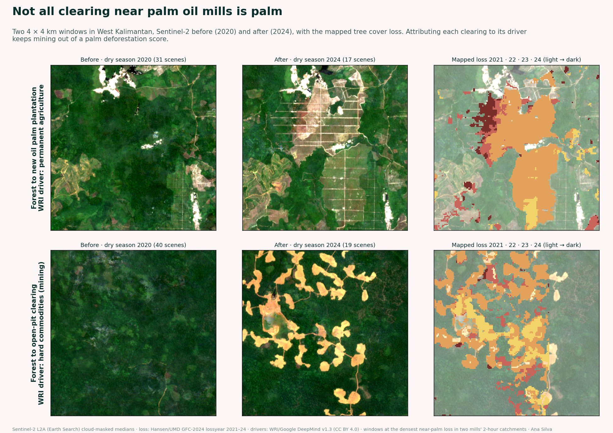
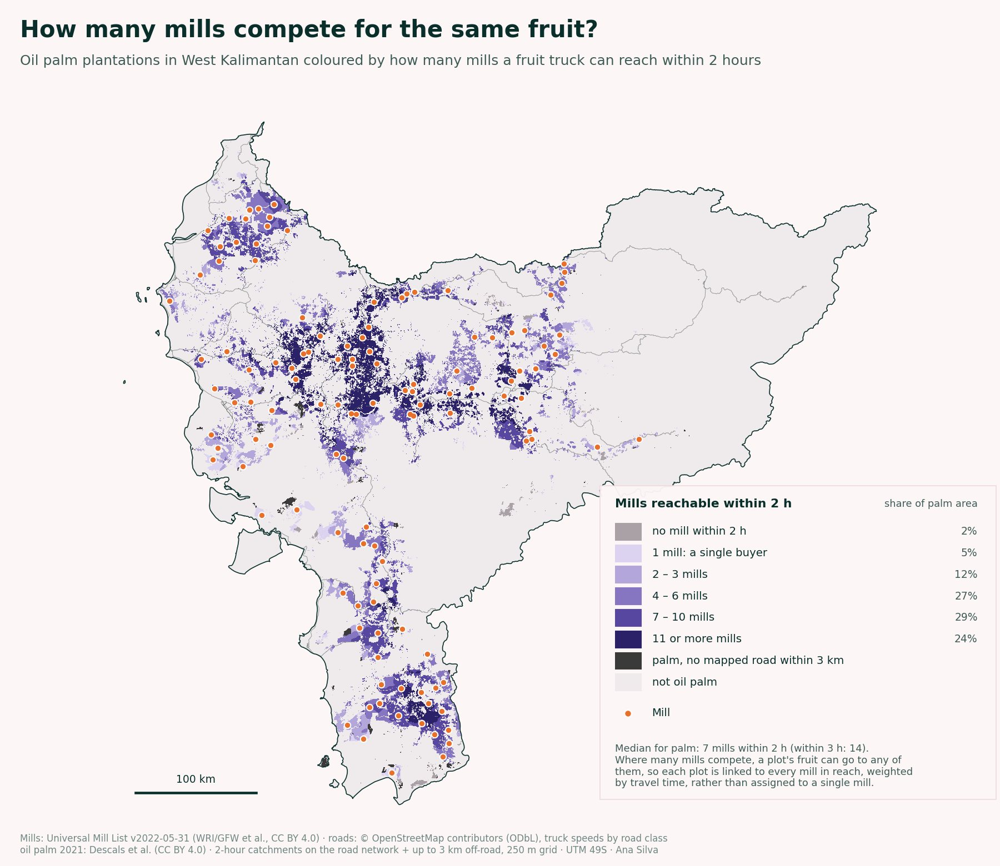
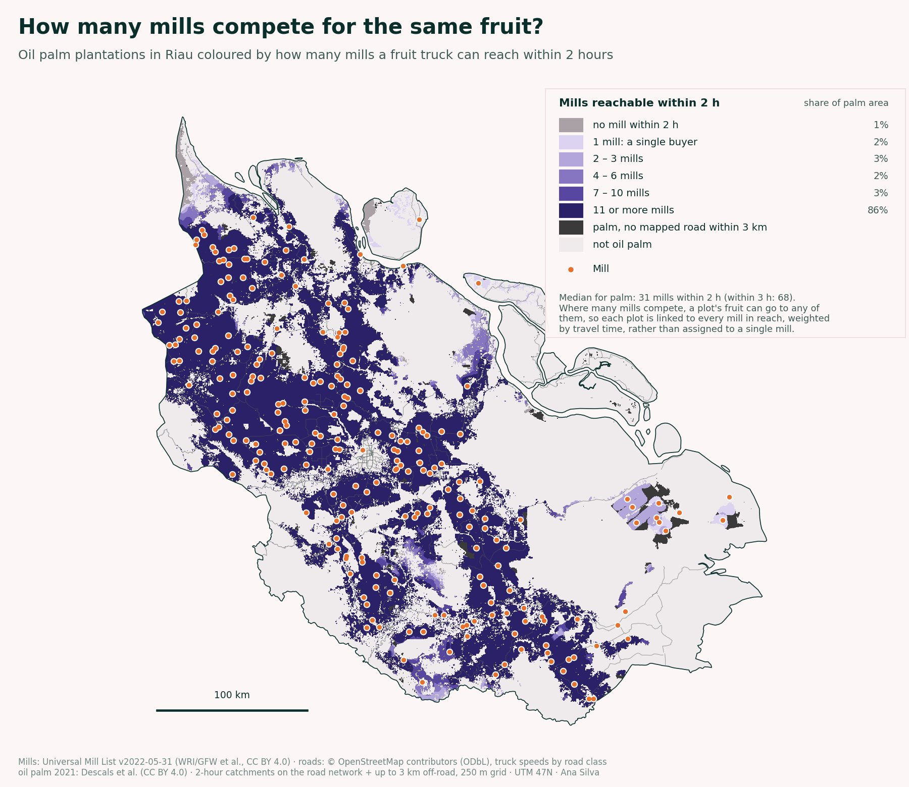
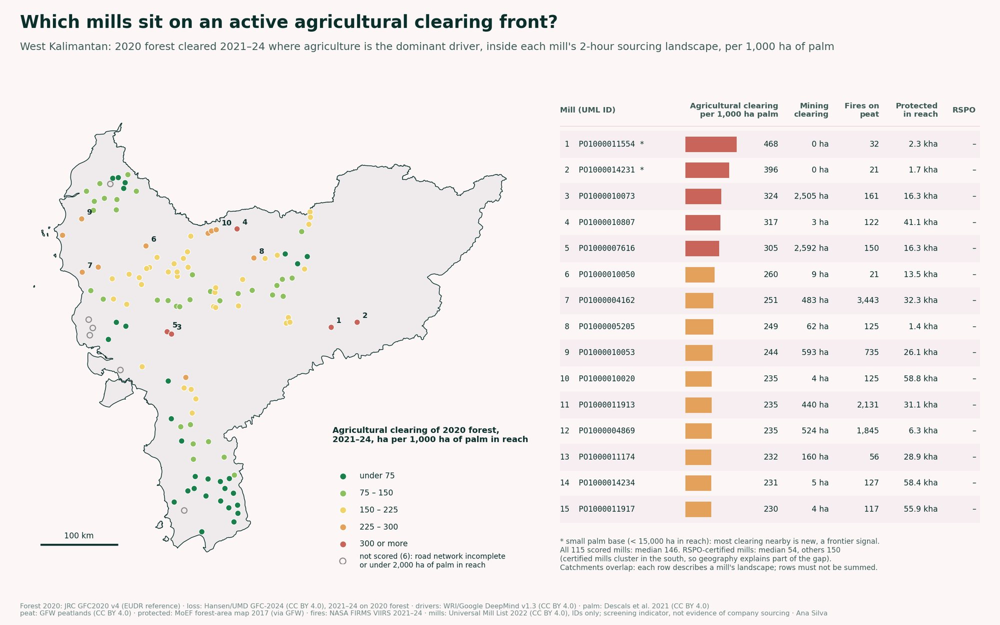
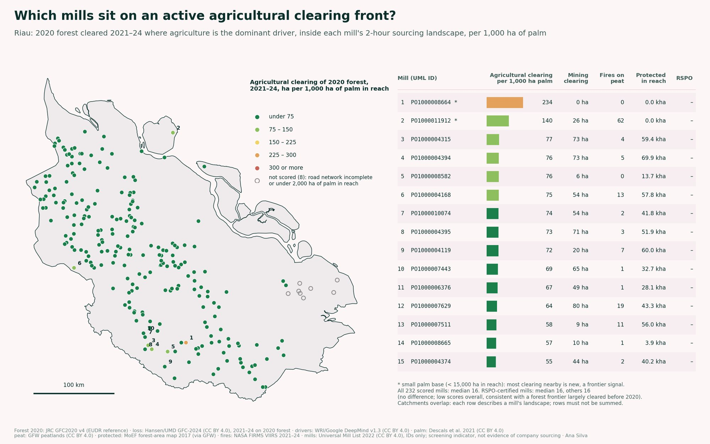
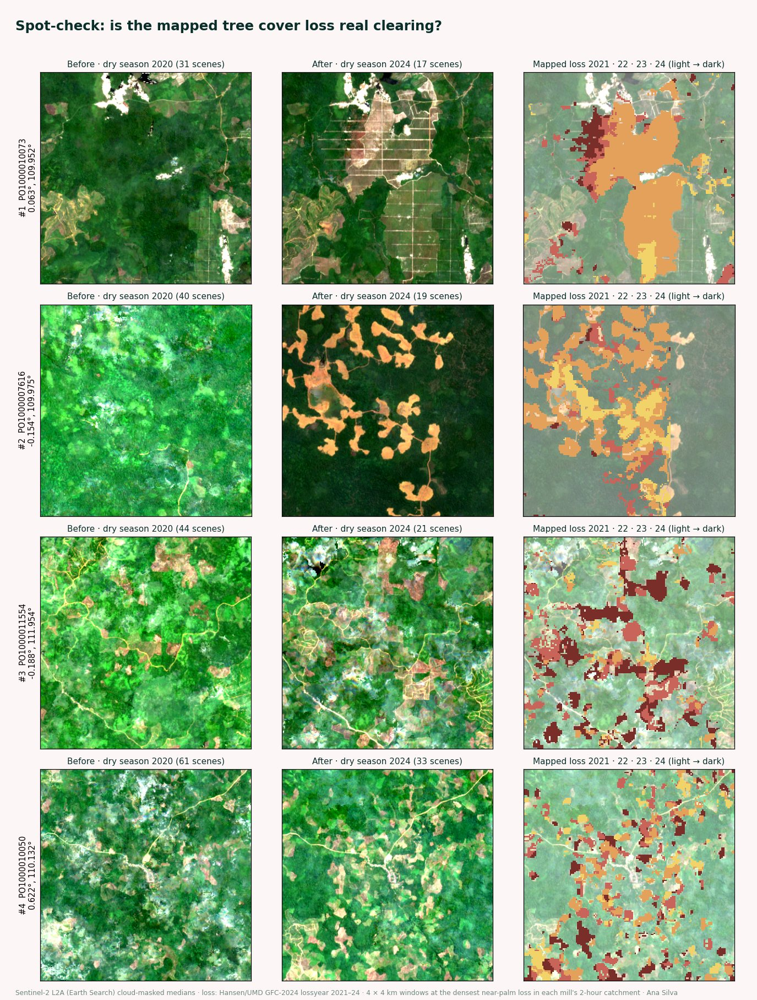

Under the EU Deforestation Regulation, anyone selling palm oil into Europe has to show it didn't come from land cleared after 2020. The oil is traceable to a mill, but mills buy fresh fruit from many farms around them. So I asked two questions: which land can realistically supply each mill, and is forest being cleared there?
I screened 361 mills in two very different provinces, West Kalimantan on Borneo and Riau on Sumatra, using only open data. This page explains how, what I found, and where the method stops.

| West Kalimantan | Riau | |
|---|---|---|
| Mills screened | 121 | 240 |
| Mature oil palm (2021) | 1.42 Mha | 2.85 Mha |
| of which smallholder | 0.29 Mha | 1.05 Mha |
| Palm within 1 hour of a mill | 89% | 91% |
| Mills within 2 hours of the palm (median) | 7 | 31 |
| Palm with only one mill in reach | 5% | 2% |
| Forest at the end of 2020 | 9.2 Mha | 3.1 Mha |
| Tree cover lost on that forest, 2021 to 2024 | 362 kha | 131 kha |
| Clearing per 1,000 ha of palm (median mill) | 146 ha | 16 ha |
In both provinces about nine in ten hectares of palm are within an hour of a mill. What differs is competition. In West Kalimantan a typical plot can reach 7 mills within 2 hours. In Riau it's 31. That matters for traceability: when fruit can go to that many mills, knowing a mill's location tells you very little about which farms supplied it. Only plot-level data from the mill can close that gap.


Using the same colour scale for both provinces, West Kalimantan has a clear agricultural clearing front through its west-central belt and along its eastern frontier. Riau is almost all green. Its remaining forest is small and mostly on peat or in protected areas, which fits a frontier that was largely cleared before 2020.
In West Kalimantan, mills with RSPO certification have lower scores (median 54 against 150 for the others), but certified mills also cluster in the south, where clearing is low anyway. In Riau there is no difference.



This is a screening of the landscape around each mill. It shows where a buyer should look first. It is not evidence of what any mill or company actually sourced, which is why mills appear only by their public ID.
| Mills | Universal Mill List, 2022 release (WRI, Rainforest Alliance and partners via Global Forest Watch), CC BY 4.0 |
| Oil palm | Descals et al., global oil palm extent 2021, 10 m, CC BY 4.0 |
| Roads | OpenStreetMap contributors, ODbL |
| Forest 2020 | JRC Global Forest Cover 2020 v4, the EUDR reference map, © European Union |
| Tree cover loss | Hansen/UMD Global Forest Change 2024 v1.12, CC BY 4.0 |
| Cause of loss | WRI and Google DeepMind, drivers of forest loss at 1 km v1.3, CC BY 4.0 |
| Peat | Global Forest Watch peatlands (Miettinen et al. for Indonesia), CC BY 4.0 |
| Protected land | Indonesia Ministry of Environment and Forestry forest-area map, 2017, via Global Forest Watch |
| Fires | NASA FIRMS, VIIRS active fires 2021 to 2024 |
| Imagery | Copernicus Sentinel-2 L2A via Earth Search |
| Boundaries | geoBoundaries, ODbL |
The code runs end to end from these sources. If you'd like to see it, or you want a screening like this for your own mills or supplier plots, get in touch.